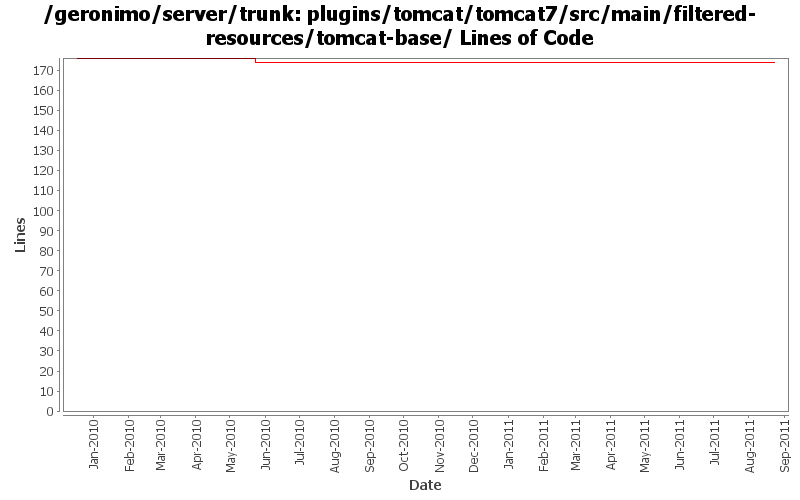

[root]/plugins/tomcat/tomcat7/src/main/filtered-resources/tomcat-base
 conf
(1 files, 1221 lines)
conf
(1 files, 1221 lines)

| Author | Changes | Lines of Code | Lines per Change |
|---|---|---|---|
| Totals | 5 (100.0%) | 5 (100.0%) | 1.0 |
| xuhaihong | 4 (80.0%) | 4 (80.0%) | 1.0 |
| rwonly | 1 (20.0%) | 1 (20.0%) | 1.0 |
GERONIMO-6119 upgrade geronimo-system to use commons-jexl 2.0
1 lines of code changed in 1 file:
GERONIMO-5337 ServerHostName does not control the bind ip address for Tomcat Connectors
3 lines of code changed in 1 file:
Remove unneeded mbean lifecycle listener
1 lines of code changed in 1 file:
Use a JasperJSPFactoryConfigurer GBean to set JSPFactoryImpl
0 lines of code changed in 2 files: